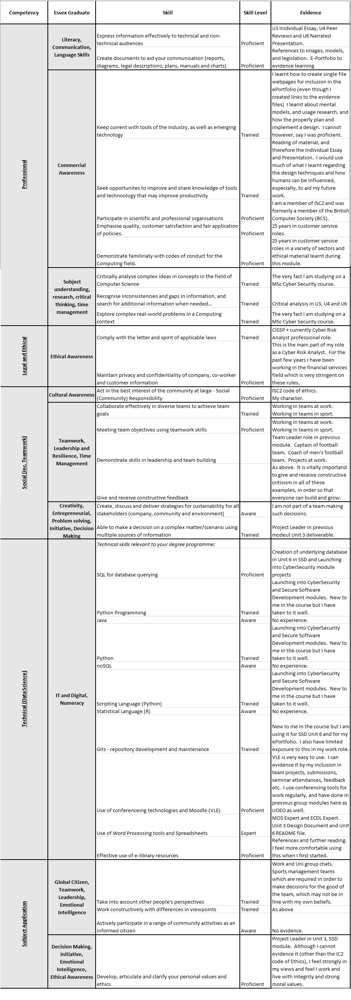

Research Methods and Professional Practice

Feedback and Artefacts
| CLQ1 | Initial Post | > Individual Essay |
| Peer Review Submission Page | You demonstrate a good level of knowledge on the subject and provide a good commentary on the appropriate elements of both essays. The key thing to remember is to try and offer critical insight, rather than describing what has been said and whether it is right or wrong, instead try to dig a bit deeper into the why. What are the good bits? What are the bad bits? What would you do differently?
I would also suggest reviewing how you reference things as it seems like a number of your references are journal/conference articles, but you have just referenced them as though they are websites. Please review referencing guidelines. | Peer Review |
| Individual Presentation | Awaiting Feedback. | Individual Presentation Transcript |
Reflection
Unit 1
The first week, as always, has been dedicated to reading as much material as possible. The first week has been the busiest in many of my modules to date, and this has been no different. I managed to get through a lot of material and will continue through the next week.
Unit 2
A slightly nervous week. I had doubts that I would be able to submit a meaningful essay, I believe this was because it is the first individual module I have been tasked with for 2 months. This has subsided and I am now focused on the reading which I know will give me what I need for a good result.
Unit 3
I feel I have caught up on the reading this week and am in a good place for the module. I also submitted my essay early, and as I was writing it, realised I could write some much content, of which I had not understood before. I am feeling very confident at this point.
Unit 4
I am in a good place for the presentation. The essay and peer reviews are handed in, almost all my reading is complete and I feel I have the knowledge and confidence required to deliver a well-formed presentation at the end of week 6. I am feeling much more relaxed.
Unit 5
I believe I am in a good position. I have competed the assignment transcript, however I need to prepare for the presentation, however I feel comfortable that a week is more than long enough! I have put in a lot of work in terms of research and now feel very comfortable I will be able to meet the deadline.
Unit 6
Presentation handed in, in good time. Have spent the last couple of days working on my ePortfolio. Looking forward to the next module.
Professional Skills Matrix

Action Plan
What I have learnt during this module, I believe to be extremely beneficial to my role as a Cyber Risk Analyst. I plan to take the human factors used in making decisions, adopting a positive approach to security rather than a negative one, and design ideas in order to favour usability. As a cyber risk analyst, it is important to understand vulnerabilities and threats that come not only from a technological viewpoint, but also a human factor one. Part of my job is to conduct regular user awareness training and I will plan to incorporate this also. I plan to do much more further reading on these topics and use them to aid my work (and aid my work in other capabilities too, such as sports coaching and relationships). I also am planning to possible use what I have learnt here as a potential for my end of course project.